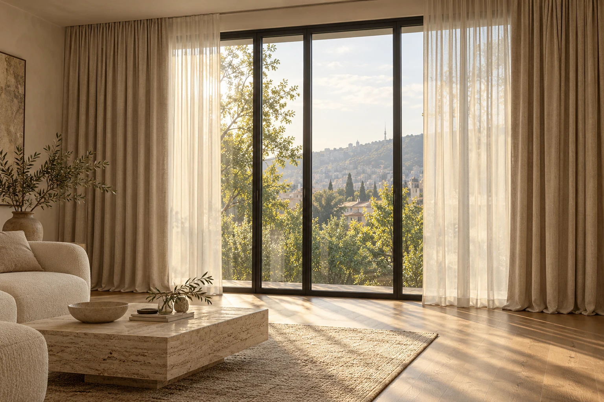

LITHOS / ტექსტილის ახალი ხედვა
შენი ფანჯარა.
შენი ხასიათი.
ერთი ფოტო. რეალური ქსოვილები.
ფარდები, რომლებიც შენს სივრცეს ერგება.
შეარჩიე მშვიდად.
ზომები და ფასი ერთად დავაზუსტოთ.

შენი ფანჯარა
გადაუღე ფოტო ან ატვირთე გალერეიდან.
შენი ქსოვილი
აირჩიე მოდელი რეალური კატალოგიდან.
შენი დიზაინი
შეცვალე ნაკეცი, სიგრძე და გაშლა.
შენი შეკვეთა
გაგვიზიარე ფოტო, ესკიზი და სურვილები.
შექმენი შენი ვერსია
როგორ მოუხდება შენს სახლს?
შეარჩიე ქსოვილი და დიზაინი — ცვლილება შენს ფოტოზე მაშინვე გამოჩნდება.
სადემონსტრაციო ინტერიერი · ესკიზი აჩვენებს განლაგების იდეას; ქსოვილის ფერი და ფაქტურა მიახლოებითია.
JPEG, PNG, WebP · მაქსიმუმ 15 მბ. გადაიღე ფანჯარა წინიდან, სრული სიმაღლით.
ზუსტად მოარგე ფოტოს +
შენი ფოტო ამ ბრაუზერში მუშავდება. გაზიარება მხოლოდ შენი მოქმედებით ხდება.
შეხება, რომელსაც მნიშვნელობა აქვს
ქსოვილს თავისი ხასიათი აქვს.
ფოტოები და მოდელების აღწერები მითითებული მომწოდებლის საჯარო კატალოგიდანაა. სახელწოდება „ტილო“ თავისთავად ბუნებრივ სელის ან ბამბის შემადგენლობას არ ნიშნავს; შერჩეულ მოდელებზე მომწოდებელი პოლიესტერს მიუთითებს. შემოწმება: 02.11.2026. ფერის საბოლოო შერჩევა სასურველია ფიზიკური ნიმუშით.
სანამ შეუკვეთავ
კარგად შერჩეული,
ზუსტად შეკერილი.
ეს ჩემი ფანჯრის რეალური ვიზუალიზაციაა?
შენი ფოტო უცვლელი რჩება; ფარდა მასზე 2D ესკიზად თავსდება. შეგიძლია მოარგო მდებარეობა და გაშლა. ესკიზი მიახლოებითია და არ იძლევა ქსოვილის ფერის, დრაპირებისა და სინათლის გამტარობის ზუსტ გარანტიას.
როგორ ავიღო ზომები?
მიუთითე კარნიზის სავარაუდო სიგანე და მანძილი სამაგრიდან სასურველ ქვედა კიდემდე, სანტიმეტრებში. შეკერვამდე სპეციალისტმა უნდა გადაამოწმოს ზომები, შეკრების კოეფიციენტი და სამაგრის ტიპი.
როგორ იგზავნება შეკვეთა?
შეკვეთის დეტალები იხსნება LITHOS-ის WhatsApp-ში და გაგზავნას თავად ადასტურებ. საწყისი ფოტო და ესკიზი შეგიძლია ჩამოტვირთო ან მოწყობილობის გაზიარების ფუნქციით გააგზავნო. ფასსა და მარაგს გუნდი შეგითანხმებს.
ჩემი ფოტო სად ინახება?
ესკიზი იქმნება შენს ბრაუზერში. ფოტო ამ ვერსიაში ავტომატურად არ აიტვირთება სერვერზე. გაზიარება ხდება მხოლოდ შენი მოქმედებითა და თანხმობით.